Everything around your stream
Before you go live, while you're live and every day after. Everything here is in the free version unless it says Pro.

Look like a channel from day one
Most small streamers don't have a designer. PeakSense gives you the logo, the overlays and the announcement in one sitting.
Overlays that drop into OBS
One click makes starting soon, be right back and thanks for watching screens, each with a looping version. Add to OBS sets them up as their own scenes and leaves yours alone.
- A webcam frame with your name on it
- Twitch panels: About, Schedule, Discord, Socials and more
- Emotes and sub badges in your colours
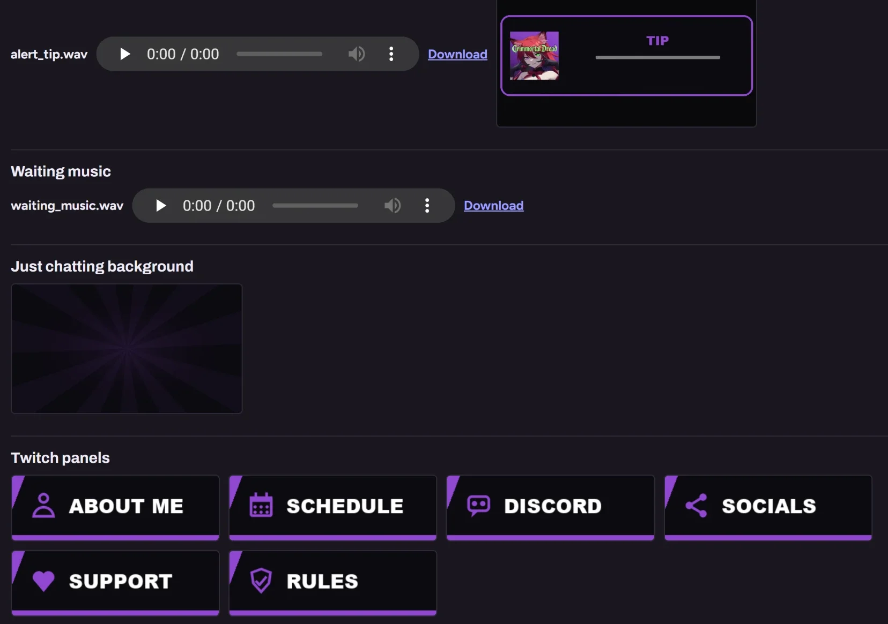
A mascot, made on your own GPU
Drop in a few photos or describe what you want and PeakSense draws a mascot, then keeps it the same character from picture to picture. It runs on your graphics card with free image models, so nothing gets uploaded.
- Start from scratch or from your own drawing
- Details it should always keep, like which eye is which colour
- Mascot emotes and logo variations from the same character
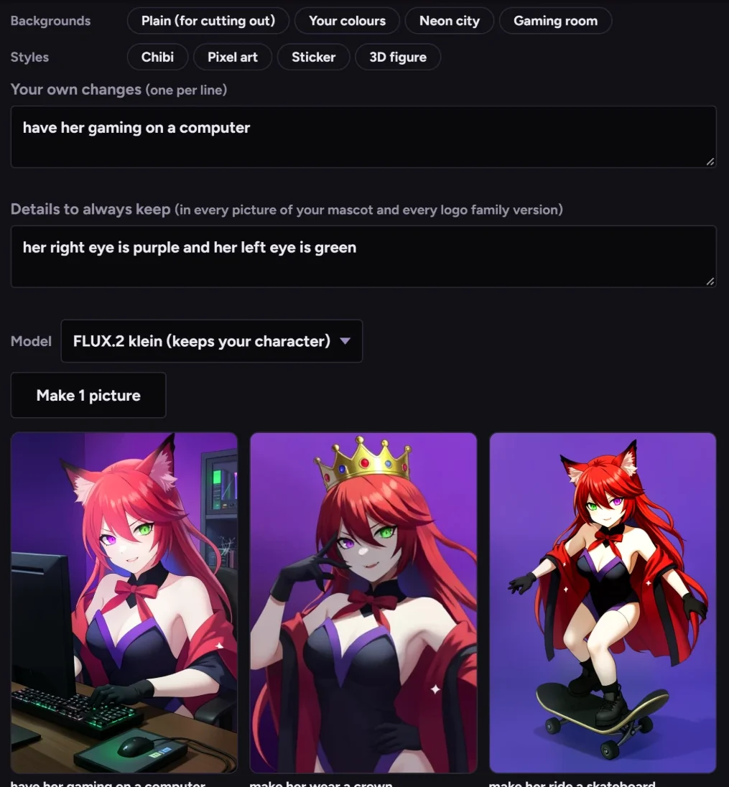
An intro and outro from your logo
Pick how your logo comes in, give it a look and a sound, and it's made in both shapes: wide for YouTube, tall for Shorts. Each video gets the one that fills its screen.
- Pop, slide, spin, shine, drop or zoom
- A jingle you draw by connecting dots on a grid, or a synth hit
- The intro and outro each keep their own style and length
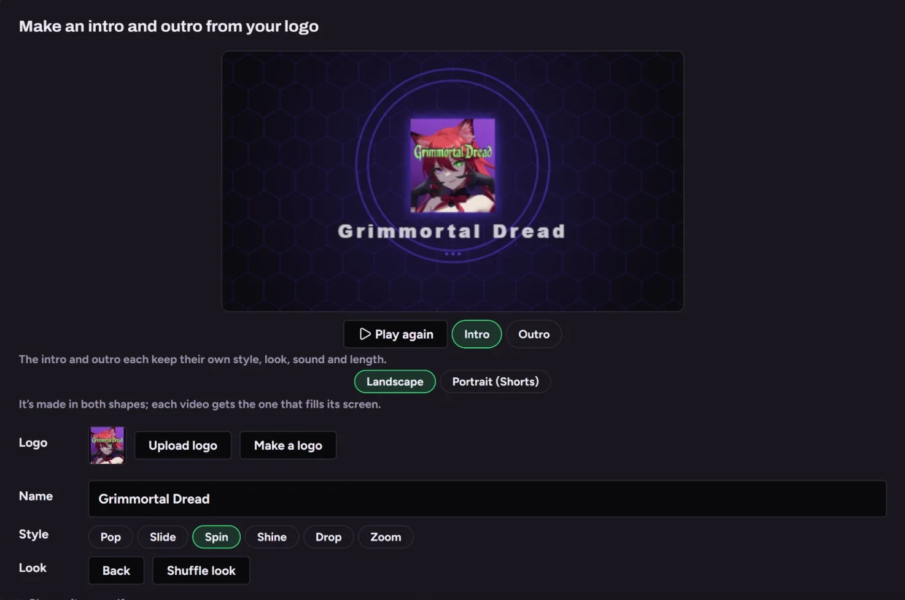
5 more things in this part
A live card the moment you start
When you go live, your Discord gets one message with every place you're streaming, and your Instagram story gets a card in your colours.
Your own Discord bot
Your name and logo on it. Live messages that update themselves, new posts with a Watch button, and private alerts with Approve buttons.
A pre-stream check
One button before you go live: OBS and its recording, your mic with a meter to talk into, room on the drive, and what happens after the stream, switched on right there.
Sound family
A matching set of stingers and alerts for big moments, from the same jingle as your intro.
Your look on everything made for you Pro
With Pro, clips posted on a schedule carry your watermark, caption style and cards without you opening them.
It's paying attention while you play
You shouldn't have to scrub a four-hour VOD to find the ten seconds that mattered.
Mark one yourself
Something happened and you want it saved? Press your hotkey, tap a Stream Deck button, type !clip in chat, or hit the big button on your phone.
- Your phone gets the whole dashboard over Tailscale
- Free phone notifications through the ntfy app
- Swipe through new clips on your phone to keep or skip
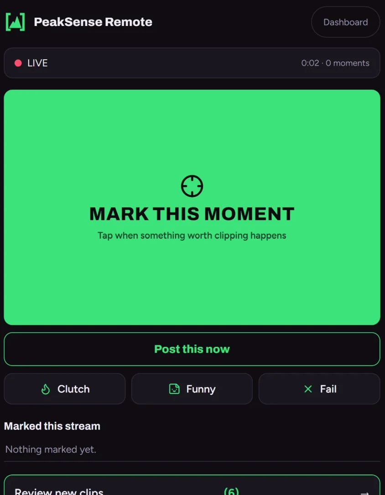
Or go through the stream yourself
Open the whole stream in the editor, scrub to anything PeakSense didn't pick, and clip it on the spot. Search what you said, mark the in and out, and it's a clip like any other.
- Clip this moment from wherever the playhead is
- Search the transcript for a word and jump to every time you said it
- Turn the whole stream into a recap from here
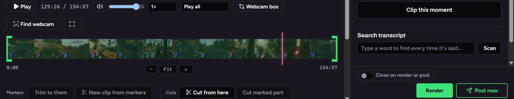
6 more things in this part
Post while you're still live Pro
A big moment can be cut, captioned and posted as a Short before the stream is over.
Keyword search
Type a word like clutch or GG and it finds every time you said it, including words that sound alike.
Smart edges
Clips start and end on whole sentences and quiet beats, so nothing gets cut off mid-word.
Local AI scoring
Optional, through Ollama on your own machine. Small models run fine on a modest PC.
Who's talking
On co-streams and podcasts every line is labelled with the speaker.
Never the same moment twice Pro
Process a stream again and it skips what's already clipped. With Pro it takes a second look a few hours later on its own.
An editor built for stream clips
Everything you'd do in a big editor to turn a stream moment into a Short, without learning a big editor.
Captions people read
Word by word, in styles you can preview on the clip before you pick one, or set the font, size, colours and position yourself.
- Fix any word right on the timeline
- A hook line across the top to stop the scroll
- Captions in other languages, with Pro
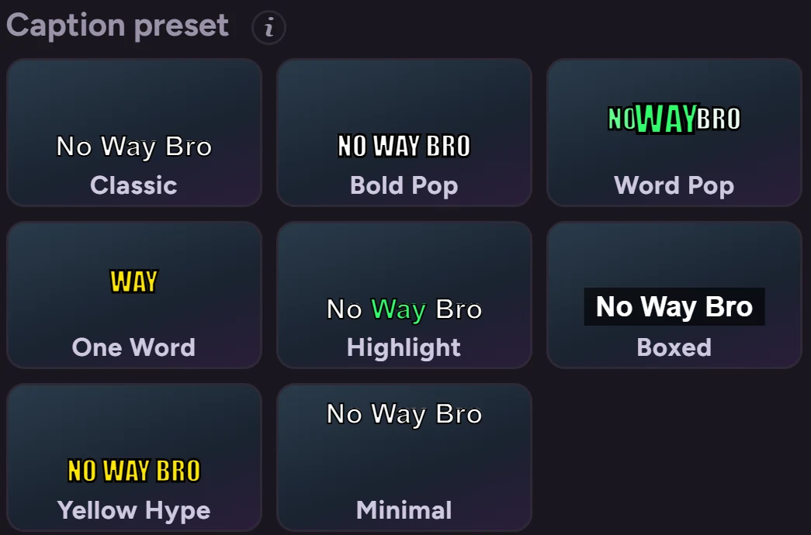
Sound you can actually mix
Turn your voice up and the game down separately, even when they were recorded on one track. Clean up hiss and rumble, add sound effects at the playhead, and hear every change straight away.
- Shorts-style sound effects and stickers on the moments
- Trim dead air in one click
- Take the stream music out, with Pro
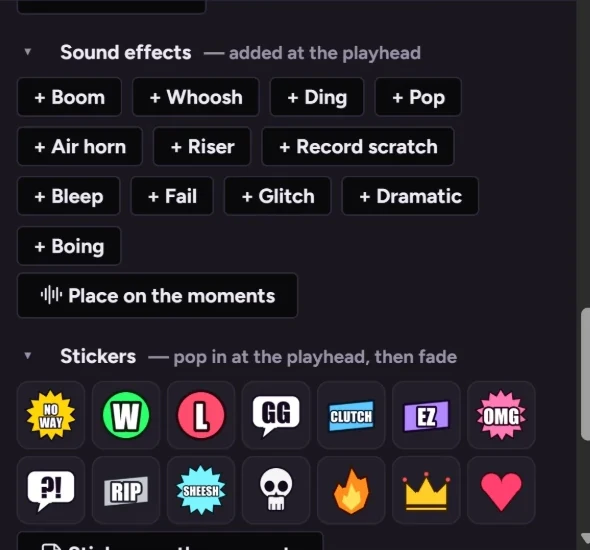
6 more things in this part
Every change plays as you make it
No waiting for a render to see what you did. The preview shows the edit the moment it's made.
Trim, cut and speed
Pull more from the stream, skip the slow middle, slow down the play and speed through the walk back.
Text, filters and music
Titles, callouts, colour filters, fades and background music.
Chat on screen
The real chat from that moment, overlaid on the clip.
Undo for everything
Nothing asks if you're sure. Do it, and undo it if you change your mind.
Bulk tools Pro
Trim, reframe, caption or queue a whole selection of clips at once.
More than Shorts
The same night of streaming can be a montage and a full recap too, edited the same way.
Montages
Your best clips back to back as one video. Every clip is a tab on the timeline: replace one, add one, split, merge or move them, and watch the change play straight away.
- One layout for every clip, or a different one per clip
- A transition of your choice between each pair
- Weekly Peak: the week's best, built on a schedule with Pro
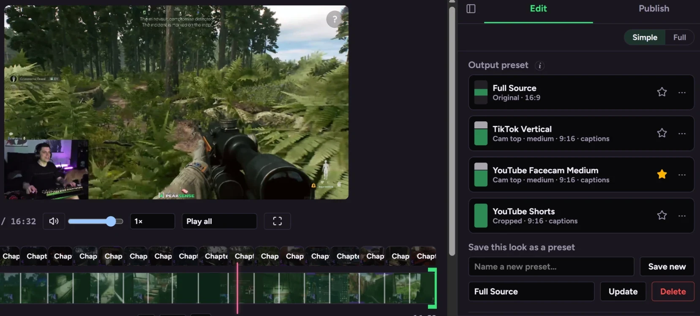
An intro, an outro and the joins between
Put your intro and outro on anything long. Pick how each chapter or clip hands over to the next, and how the video leaves for the outro, like a slow fade to black.
- Cuts, crossfades, whips, zooms, a long fade to black and more
- Set them one join at a time or all at once
- The intro and outro go on when it's posted, so your file stays clean
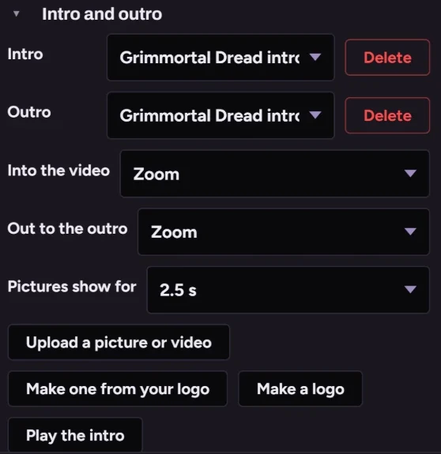
3 more things in this part
A recap of the whole stream Pro
The stream cut down to its best stretches, with YouTube chapters. See it on the Pro page.
Thumbnails
Thumbnail ideas from the clip's best frames in your brand's template, with AI suggestions in Pro.
A multi-stream editor
Put several streams or parts of one into a single video, with transitions between them.
Getting it seen
Making the clip is half of it. PeakSense puts it out at the right time and tells you what to do next.
Know what's working
PeakSense suggests what to post next from what's getting views in your games. With Pro, Insights show which kinds of moments get watched, how long people stay and when they show up, and it leans toward more like your best posts.
- What to post next, from what's getting views in your games
- Title testing on YouTube, keeping the winner, with Pro
- Comments waiting for a reply, with a suggested answer
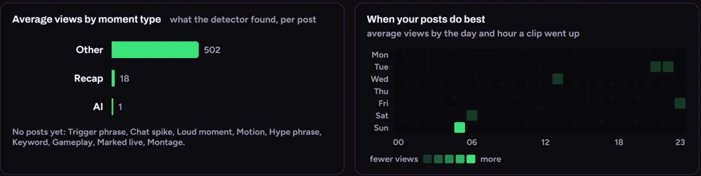
7 more things in this part
A schedule that posts for you Pro
Set the days and times once and it renders and posts at the hours your viewers show up. See it on the Pro page.
YouTube
Shorts with the title and description filled in. Playlists by game and series with Pro.
Instagram and Facebook
Reels to a Creator or Business account and to your Facebook Page.
TikTok
Post from the editor; scheduled clips land in your drafts to publish.
A morning report Pro
One message a day with last night's clips, what posted and how it's doing.
Editor and mod logins Pro
Let someone you trust review and edit clips from their own computer.
A media kit
Your channel's numbers on one clean page for sponsors.
It all stays with you
No credits, no uploads, no monthly bill.
Your PC, your files
Recording, finding moments, editing, captions and AI pictures all run on your computer. PeakSense only goes online to check your own channel or post to your own accounts.
- OBS recordings, dropped-in files, watched folders and your past broadcasts in one library
- Pin streams to keep, shrink old ones to a tenth of the size
- MKV recordings turned into MP4 without re-encoding
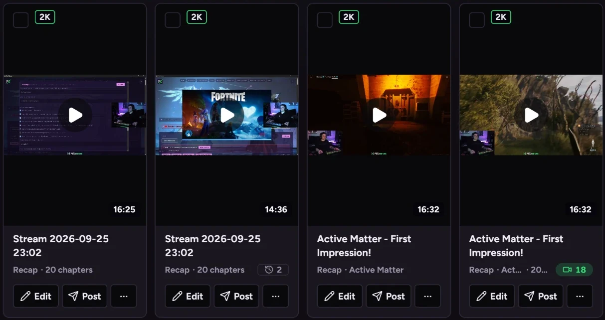
3 more things in this part
Works on NVIDIA and AMD
A graphics card makes it fast, and it picks settings that suit yours on first run. CPU-only works too.
Never a half-saved file
Renders are written whole or not at all, and a broken one never replaces a good earlier version.
Back up and move
Take your library, settings and brand to a new PC in one go.